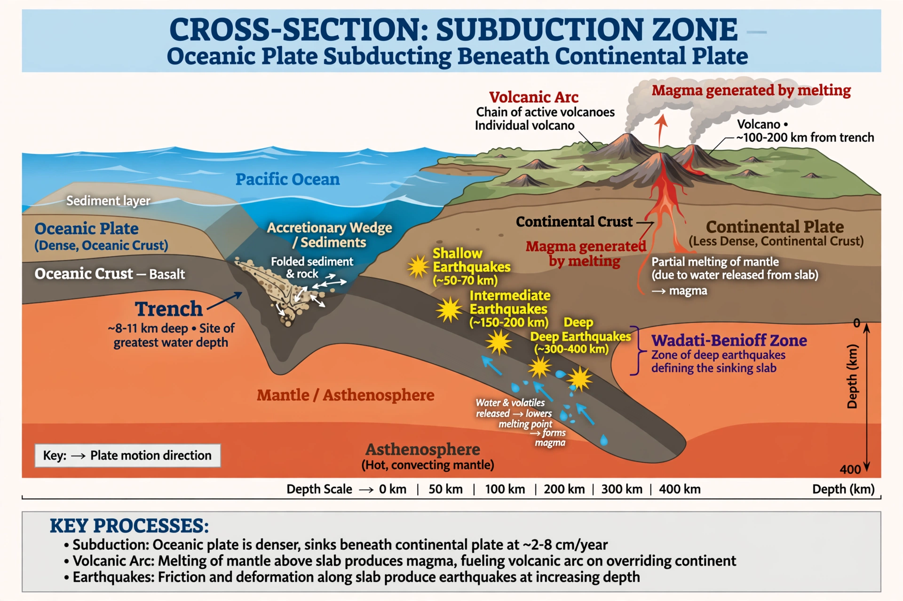

Subduction

Subduction is the process at convergent plate boundaries where one tectonic plate slides beneath another and sinks into the mantle. It is the recycling half of Plate tectonics: as new crust is created at mid-ocean ridges, old oceanic crust is returned to the interior at subduction zones.
Subduction zones are marked by deep ocean trenches, chains of volcanoes, and the largest earthquakes on Earth.
Geometry and processes
Where oceanic lithosphere converges with another plate it bends down into the mantle at angles typically between 30 and 70 degrees. Earthquakes trace the descending slab in the Wadati–Benioff zone, reaching depths of nearly 700 kilometres. Water carried down in the slab's minerals is released as the slab heats, lowering the melting point of the mantle above and generating the magma that feeds volcanic arcs such as the Andes, Japan and the Aleutians.
The Marianas system, where the Pacific Plate subducts westward, created the {L('Mariana_Trench')} and its {L('Challenger_Deep')}.
Hazards and significance
Megathrust earthquakes on the shallow part of the plate interface — Sumatra 2004, Chile 2010, Japan 2011 — are the most powerful on Earth and can launch devastating {L('Tsunami','tsunamis')}. Subduction also drives the long-term carbon cycle by carrying carbonates into the mantle, and it builds continental crust over geological time through arc volcanism.
See also: Plate tectonics · Mid-ocean ridge · Mariana Trench · Volcano · Earthquake · Tsunami